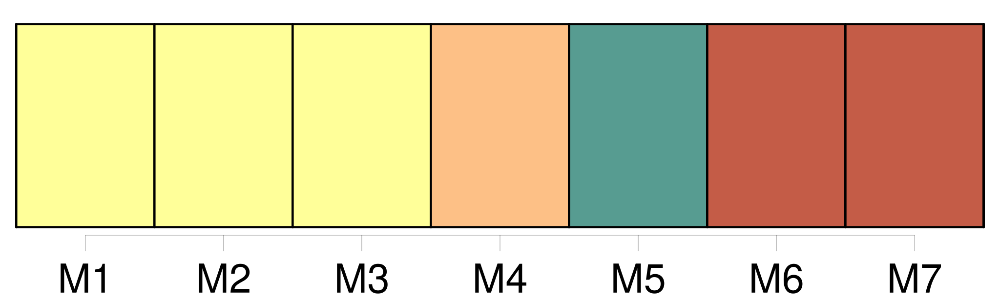
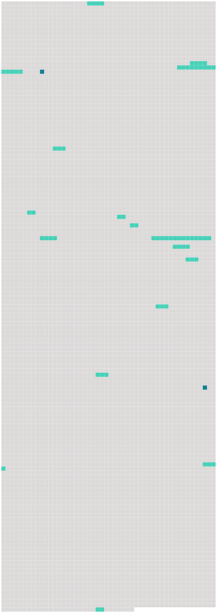

Longueur nb maillons : 17 mentions |
  |
Il sera donné au passager un avis écrit indiquant que, lorsque la présente convention s'applique, elle régit [la responsabilité des transporteurs] en cas de mort ou de lésion ainsi qu'en cas de destruction, de perte ou d'avarie des bagages, ou de retard. [26 phrases]
L'expéditeur assume la responsabilité de tout dommage subi par le transporteur ou par toute autre personne à l'égard de laquelle [la responsabilité du transporteur] est engagée, en raison d'indications et de déclarations irrégulières, inexactes ou incomplètes fournies et faites par lui ou en son nom. [1 phrases]
Sous réserve des dispositions des paragraphes 1 et 2 du présent article, le transporteur assume [la responsabilité de tout dommage subi par l'expéditeur ou par toute autre personne] à l'égard de [laquelle] la responsabilité de l'expéditeur est engagée, en raison d'indications et de déclarations irrégulières, inexactes ou incomplètes insérées par lui ou en son nom dans le récépissé de marchandises ou dans les données enregistrées par les autres moyens prévus au paragraphe 2 de l'article 4. [29 phrases]
CHAPITRE III [21 phrases]
Article 20 Lorsqu'une demande en réparation est introduite par une personne autre que le passager, en raison de la mort ou d'une lésion subie par ce dernier, le transporteur est également exonéré en tout ou en partie de [sa responsabilité] dans la mesure où il prouve que la négligence ou un autre acte ou omission préjudiciable de ce passager a causé le dommage ou y a contribué. [2 phrases]
Pour les dommages visés au paragraphe 1 de l'article 17 et ne dépassant pas 100000 droits de tirage spéciaux par passager, le transporteur ne peut exclure ou limiter [sa responsabilité] [3 phrases]
En cas de dommage subi par des passagers résultant d'un retard, aux termes de l'article 19, [la responsabilité du transporteur] est limitée à la somme de 4150 droits de tirage spéciaux par passager. [1 phrases] Dans le transport de bagages, [la responsabilité du transporteur en cas de destruction, perte, avarie ou retard] est limitée à la somme de 1000 droits de tirage spéciaux par passager, sauf déclaration spéciale d'intérêt à la livraison faite par le passager au moment de la remise des bagages enregistrés au transporteur et moyennant le paiement éventuel d'une somme supplémentaire. [2 phrases] Dans le transport de marchandises, [la responsabilité du transporteur] , en cas de destruction, de perte, d'avarie ou de retard, est limitée à la somme de 17 droits de tirage spéciaux par kilogramme, sauf déclaration spéciale d'intérêt à la livraison faite par l'expéditeur au moment de la remise du colis au transporteur et moyennant le paiement d'une somme supplémentaire éventuelle. [2 phrases] En cas de destruction, de perte, d'avarie ou de retard d'une partie des marchandises, ou de tout objet qui y est contenu, seul le poids total du ou des colis dont il s'agit est pris en considération pour déterminer la limite de [responsabilité du transporteur] [12 phrases] Toutefois, les États qui ne sont pas membres du Fonds monétaire international et dont la législation ne permet pas d'appliquer les dispositions du paragraphe 1 du présent article, peuvent, au moment de la ratification ou de l'adhésion, ou à tout moment par la suite, déclarer que la limite de [responsabilité du transporteur] prescrite à l'article 21 est fixée, dans les procédures judiciaires sur leur territoire, à la somme de 1500000 unités monétaires par passager ; 62500 unités monétaires par passager pour ce qui concerne le paragraphe 1 de l'article 22 ; 15000 unités monétaires par passager pour ce qui concerne le paragraphe 2 de l'article 22 ; et 250 unités monétaires par kilogramme pour ce qui concerne le paragraphe 3 de l'article 22. [18 phrases]
Article 26 [2 phrases]
Ces avances ne constituent pas une reconnaissance de [responsabilité] et elles peuvent être déduites des montants versés ultérieurement par le transporteur à titre de dédommagement. [28 phrases] Sous réserve des dispositions du présent article, les parties au contrat de transport de fret peuvent stipuler que tout différend relatif à [la responsabilité du transporteur] en vertu de la présente convention sera réglé par arbitrage. [43 phrases]
Un transporteur peut être tenu, par l'État partie à destination duquel il exploite des services, de fournir la preuve qu'il maintient une assurance suffisante couvrant [sa responsabilité] au titre de la présente convention. |
 |
La ressource peut être téléchargée sur la page Ortolang
Si vous avez des questions ou vous voyez des erreurs, merci d'envoyer un mail à silvia.federzoni89@gmail.com
Site développé par S. Federzoni (contact)